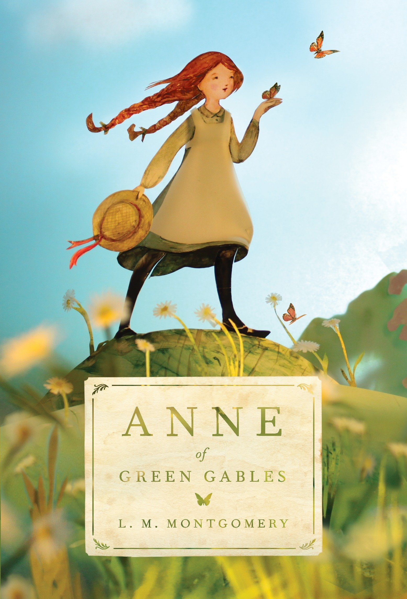

Anne of Green Gables is a 1908 novel by Canadian author Lucy Maud Montgomery (published as L. M. Montgomery). Written
for all ages, it has been considered a classic children's novel since the mid-20th century. Set in the late 19th
century, the novel recounts the adventures of Anne Shirley, an 11-year-old orphan girl, who is mistakenly sent to two
middle-aged siblings, Matthew and Marilla Cuthbert, who had originally intended to adopt a boy to help them on their
farm in the fictional town of Avonlea in Prince Edward Island, Canada. The novel recounts how Anne makes her way
through life with the Cuthberts, in school, and within the town.
Since its publication, Anne of Green Gables has been translated into at least 36 languages and has sold more than 50
million copies, making it one of the best selling books worldwide.The first in an anthology series, Montgomery
wrote numerous sequels, and since her death, another sequel has been published, as well as an authorized prequel.
The original book is taught to students around the world.
The book has been adapted as films, television films, and animated and live-action television series. Musicals and plays
have also been created, with productions annually in Europe and Japan.
Background
In writing the novel, Montgomery was inspired by notes she had made as a young girl about two siblings who were
mistakenly sent an orphan girl instead of the boy they had requested, yet decided to keep her. She drew upon her
own childhood experiences in rural Prince Edward Island, Canada. Montgomery used a photograph of Evelyn Nesbit, which
she had clipped from New York's Metropolitan Magazine and put on the wall of her bedroom, as the model for the face
of Anne Shirley and a reminder of her "youthful idealism and spirituality."
Montgomery was inspired by the "formula Ann" orphan stories (called such because they followed such a predictable formula)
which were popular at the time and distinguished her character by spelling her name with an extra "e". She
based other characters, such as Gilbert Blythe, in part on people she knew. She said she wrote the novel in the
twilight of the day, while sitting at her window and overlooking the fields of Cavendish.
Plot summary
Anne Shirley, a young orphan from the fictional community of Bolingbroke, Nova Scotia (based upon the real
community of New London, Prince Edward Island), is sent to live with Marilla and Matthew Cuthbert,
unmarried siblings in their fifties and sixties, after a childhood spent in strangers' homes and orphanages.
Marilla and Matthew had originally decided to adopt a boy from the orphanage to help Matthew run their farm at
Green Gables, which is set in the fictional town of Avonlea (based on Cavendish, Prince Edward Island). Through
a misunderstanding, the orphanage sends Anne instead.
Anne is fanciful, imaginative, eager to please, and dramatic. She is also adamant her name should always be spelt with an
e at the end. However, she is defensive about her appearance, despising her red hair, freckles and pale, thin frame,
but liking her nose. She is talkative, especially when it comes to describing her fantasies and dreams. At first,
stern Marilla says Anne must return to the orphanage, but after much observation and consideration, along with kind,
quiet Matthew's encouragement, Marilla decides to let her stay.
Anne takes much joy in life and adapts quickly, thriving in the close-knit farming village. Her imagination and
talkativeness soon brighten up Green Gables.

Author : Lucy Maud Montgomery
Illustrator : M. A. and W. A. J. Claus
Cover artist : M.A Montgomery
Country : Written and set in Canada,published in the United States
Language : English
Series : Anne of Green Gables
Subject : Little orphan girl
Genre : Novel
Set in Prince Edward Island
Published : June 1908
Publisher : L.C. Page & Co.
Followed by Anne of Avonlea
Text : Anne of Green Gables at Wikisource